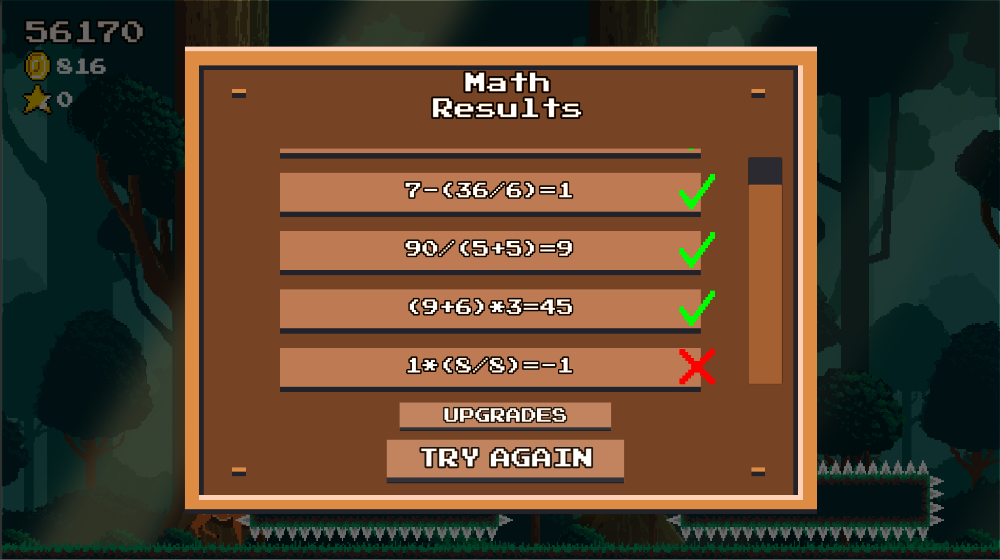
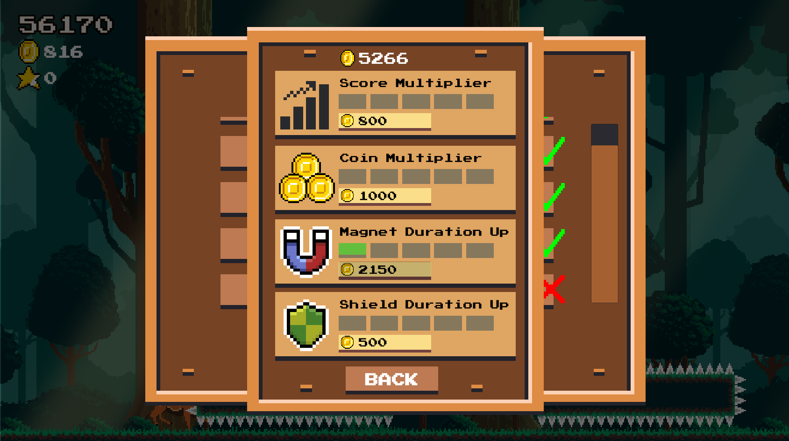

Concept and Gameplay
Game Concept

My idea for the game was a 2D endless runner in a forest, and I wanted the visual to have depth with layers of forest scrolling past. I am mainly a programmer, and I was tired of the "programmer's art" that I have always done in the past. So this was my attemp at trying to make things look nice, and by the end it felt quite rewarding seeing myself improve a lot in art.
This concept art consisted of several layers of trees and lights in a parallax scrolling effect giving it more depth in a 2D side scroller along with a run cycle of a deer. I really liked the outcome of this, so it became the aesthetic and feel of the game.
For the gameplay I wanted something a bit more unique to the endless runner, so I decided to add math questions that will help players with mental math.
Gameplay - Movement and Dashing

The player is running endlessly as a deer and there are two actions, jumping and dashing.

Three jumps can be made before touching the ground.
Dashing can be used without limit, but there is a slight cooldown between dashes.
The combination of the two actions allowed for challenging and fun obstacles like what you see here.
Gameplay - Math System

When picking up an upgrade or stars, the player will trigger a math problem that may consist multiple operations and parenthesis.

In order to answer the problem, there will be three answers to choose from, and the player will have to pick up the correct one. If the answer is correct, then the upgrade that was picked up will be applied.

There is also a Math Setting where the player can select the kinds of math problem they wish to practice/play with.

At the end of the run, the player is presented with all the math questions they did during that run.
Gameplay - Upgrades/PowerUps

The game consists of four upgrades and two pickups.
Technical/Programming Challenges
Collision Detection
Problem:
Whenever the player jumps and lands, it's 2D colliders sinks into the ground collider for a couple frames, then it pops back up making it feel awful. This is probably due to the game being on a very small scale since it's pixel art and Unity doesn't seem to handle physics well in a very small scale.
Solution:
I used Unity's raycast to detect collisions between the colliders in the Update loop. This is the way it works, the gameobject that needs collision would constantly shoot rays from the origin(collider's edges) at a certain ray length, to detect a hit with another collider. And once it detects a hit, it would set it's X or Y velocity to zero depending on which direction the collision is being detected.

Platform Prefabs
Problem:
The version of Unity I worked with didn't have nested prefabs yet, and that really killed the workflow. There were specific coin/obstacle patterns I wanted, so generating the coins randomly in a grid based system would not work. In the beginning I had a prefab for every different platforms and in each of the platforms had coin and obstacle prefabs. And without nested prefabs, if I were to make a change to the base coin prefab, the change won't reflect on the coins inside the platform prefab because it is nested within another prefab. So I had to go through them one by one to change it, which would take too long and too inefficient.
Solution:
I simply broke the cluster of nested prefabs and put them together in the scene so it's just 3 different prefabs grouped together under a gameobject, and I instantiated that gameobject like a prefab. It's not the cleanest/most flexible way to do it, but it worked for what I needed.

Math Question Generator
Problem:
I wanted to generate random math questions with random operands from 1-9 that had 1 or 2 operators with all 4 basic math operations. But with division in, it would create decimals/fractions, and solving for non-whole numbers would not be fair for the game.
Solution:
If division is in the problem then I will simply regenerate the divisor as a factor of the dividend.
Code Architecture - Flexibility/Modularity/Maintainability
Problem:
Usually in a reletively small project I woulndn't have to worry about how each class/script interacted with each other. But near the end of this project, I had around 40 classes/scripts, and it was a bit harder to keep track of things. It has also become hard to add new features or edit the project without breaking things. I had a lot of classes referencing each other creating a lot of dependencies.
Solution:
I ended up fixing a lot of the dependency problems by using more Events, having scripts broadcast events prevented it from referencing other scripts. And I also used scriptable objects to seperate some of the dependencies even more. In the end I broke up a lot of the scripts and tried to follow the one responsibility principle per script and it made the code a lot more clear. With each script being responsible for 1 thing only, which also created more modular systems.
Component Based vs Object Oriented Design:
Unity itself follows a component based design, and that works because every entity or thing in a game is a gameobject, and every single gameobject has components that controls it's behaviours.
In the beginning I had a class called "PickUp" and all it does is executing a funnction when it touches the player, then it destroys itself. Then I had StarPickUp, MagnetPickUp,.... all inherit from it. From a OOP design this would make sense. But then when there are a lot more different kinds of pick ups involved it started to not make sense, the star and coin pick up both added score, but the coin pick up played a sound and the star pick up added a star. And this situation happened to a lot of other systems also preventing it from being modular.
Then I started breaking down each entity into components, and I would make a script for every component. So now instead of just "StarPickUp" component on the star pickup, it would have "DestroyOnContact", "AddScoreOnDestroy", and "AddStarOnDestroy" components attached to it. With it being broken down to three basic actions made it so much more modular since I can reapply the same components to other gameobjects that has that same function.